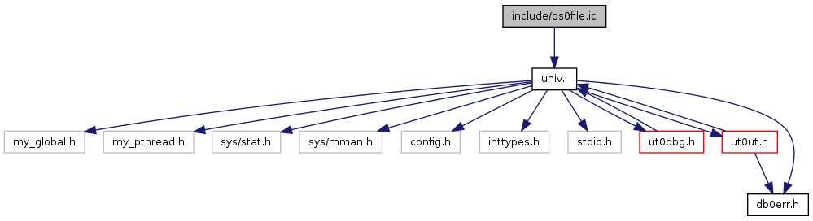
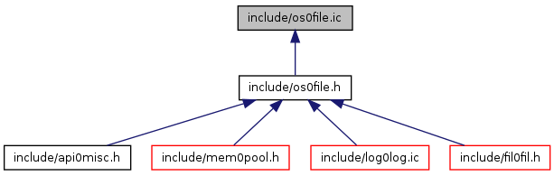

InnoDB Plugin
1.0
Main Page
Data Structures
Files
File List
Globals
include
os0file.ic File Reference
#include "
univ.i
"
Include dependency graph for os0file.ic:

This graph shows which files directly or indirectly include this file:

Detailed Description
The interface to the operating system file io
Created 2/20/2010 Jimmy Yang
Generated on Fri Aug 21 2015 19:14:26 for InnoDB Plugin by
1.8.1.2
 1.8.1.2
1.8.1.2